最近状态很糟，写点东西静下心，捋捋思绪，就总结下之前学得JNI的一些知识点好了
新建项目工程
package myapplication.mask.com.myapplication;
import android.support.v7.app.AppCompatActivity;
import android.os.Bundle;
import android.widget.Toast;
public class MainActivity extends AppCompatActivity {
static{
System.loadLibrary("demo");//载入类库
}
public native static String FromNative();//声明Native方法
@Override
protected void onCreate(Bundle savedInstanceState) {
super.onCreate(savedInstanceState);
setContentView(R.layout.activity_main);
Toast.makeText(this,FromNative(),Toast.LENGTH_SHORT).show();
}
}
然后Make Project
下面切换到app/src/main/java目录下，执行下面的命令生成一个JNI头文件
javah myapplication.mask.com.myapplication.MainActivity
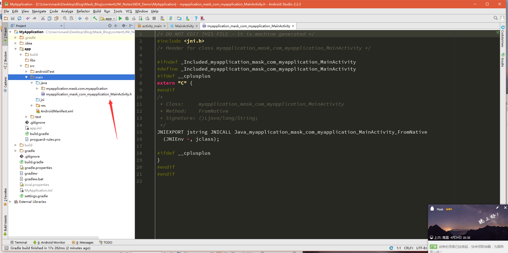
我们来看看这个头文件都有些啥
/* DO NOT EDIT THIS FILE - it is machine generated */
#include <jni.h> //需要导入jni.h头文件
/* Header for class myapplication_mask_com_myapplication_MainActivity */
#ifndef _Included_myapplication_mask_com_myapplication_MainActivity
#define _Included_myapplication_mask_com_myapplication_MainActivity
#ifdef __cplusplus
extern "C" {
#endif
/*
* Class: myapplication_mask_com_myapplication_MainActivity /*类名*/
* Method:FromNative /*方法名*/
* Signature: ()Ljava/lang/String; /*签名信息（是不是很像smali代码？！！反正我第一反应是这个*/
*/
JNIEXPORT jstring JNICALL Java_myapplication_mask_com_myapplication_MainActivity_FromNative
(JNIEnv *, jclass);//这个Native方法的声明
#ifdef __cplusplus
}
#endif
#endif
这里有个概念那就是我怎么知道这个声明的方法就是我要调用的呢？
这个是JNI规定的写法，为了方便，编译时会自动在头文件生成，包含的内容一看便知，将包名中的" ."换成了""然后+“”+类名
myapplication_mask_com_myapplication_MainActivity
为了方便，我把这个头文件重命名为demo.h，然后新建一个JNI目录，将demo.h移动到JNI下
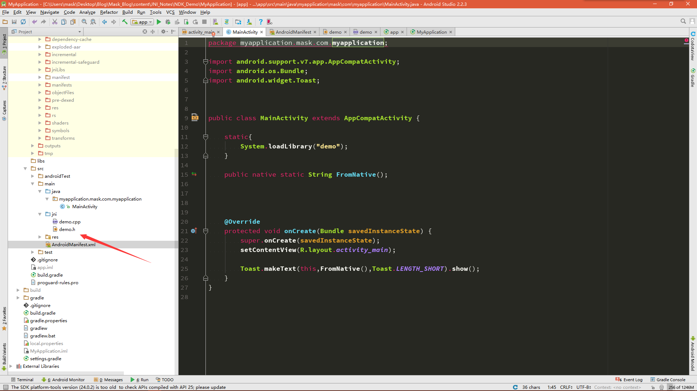
然后开始编译， 将项目的build.gradle改成如下：
apply plugin: 'com.android.model.application' //此处加了model
model { //对应加上model
android {
compileSdkVersion 25
buildToolsVersion "24.0.1"
defaultConfig {
applicationId "myapplication.mask.com.myapplication"
minSdkVersion.apiLevel 19 //此处修改了
targetSdkVersion.apiLevel 25//此处修改了
versionCode 1
versionName "1.0"
testInstrumentationRunner "android.support.test.runner.AndroidJUnitRunner"
}
buildTypes {
release {
minifyEnabled false
proguardFiles.add(file("proguard-rules.pro"))//此处修改了
}
}
ndk {
moduleName "demo" //库名
stl "stlport_static"//以静态链接方式使用的stlport版本的STL
ldLibs.addAll(["log","z","android"])
abiFilters.addAll(['armeabi','armeabi-v7a']) //abi平台
}
//sourceSets { main { jni.srcDirs = ['src/main/jni', 'src/main/jni/'] } }
}
}
dependencies {
compile fileTree(dir: 'libs', include: ['*.jar'])
androidTestCompile('com.android.support.test.espresso:espresso-core:2.2.2', {
exclude group: 'com.android.support', module: 'support-annotations'
})
compile 'com.android.support:appcompat-v7:25.1.0'
testCompile 'junit:junit:4.12'
}
再来修改工程下的build.gradle:
// Top-level build file where you can add configuration options common to all sub-projects/modules.
buildscript {
repositories {
jcenter()
}
dependencies {
classpath 'com.android.tools.build:gradle-experimental:0.8.3' //此处需要修改gradle的版本号
// NOTE: Do not place your application dependencies here; they belong
// in the individual module build.gradle files
}
}
allprojects {
repositories {
jcenter()
}
}
task clean(type: Delete) {
delete rootProject.buildDir
}
其他编译方式：
http://www.tuicool.com/articles/3mu22ie
http://www.jianshu.com/p/9d001d966053?utm_source=tuicool&utm_medium=referral
然后新建一个demo.cpp文件
//
// Created by mask on 2017/4/25.
//
#include <iostream>
#include "demo.h"
#include <jni.h>
using namespace std;
/*头文件中的信息，可以直接复制过来
* Class: myapplication_mask_com_myapplication_MainActivity
* Method:FromNative
* Signature: ()Ljava/lang/String;
*/
JNIEXPORT jstring JNICALL Java_myapplication_mask_com_myapplication_MainActivity_FromNative
(JNIEnv *env, jclass clazz)
{
return env->NewStringUTF("Hello from JNI!");
}
然后运行：
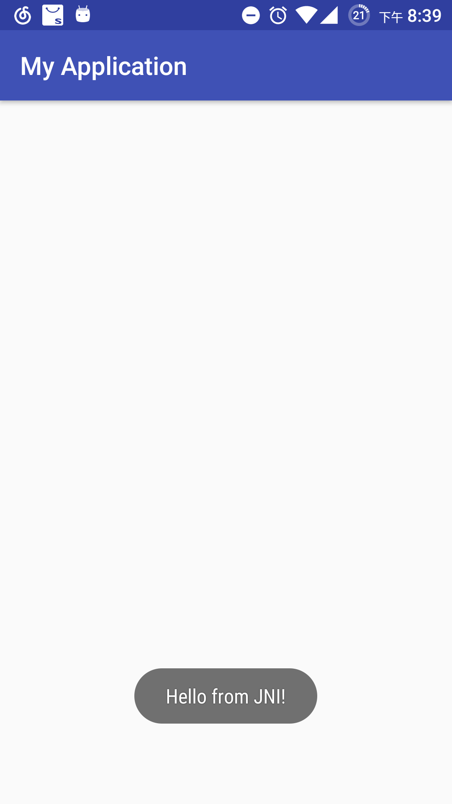
如果用c写的话，demo.c
//
// Created by mask on 2017/4/25.
//
#include "demo.h"
#include <jni.h>
/*
* Class: myapplication_mask_com_myapplication_MainActivity
* Method:FromNative
* Signature: ()Ljava/lang/String;
*/
JNIEXPORT jstring JNICALL Java_myapplication_mask_com_myapplication_MainActivity_FromNative
(JNIEnv *env, jclass clazz)
{
return (*env)->NewStringUTF(env,"Hello from JNI!");
}
可以发现这(*env)其实是个二级指针，而c++则是使用了一级指针，至于分别指向了哪，不急，下面开始切入正题
那么可以把AS关了，把刚刚那么应用解压一下，你会发现有一个lib目录，这就是一般情况下库文件存放的地方
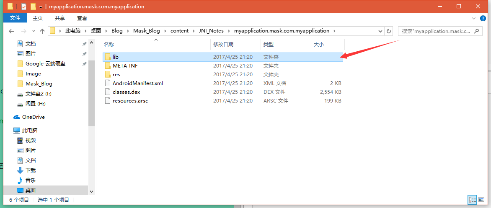
用IDA打开那个so文件(我一般喜欢打开armeabi下的)
这个就是我们编写的Native函数,跟进去
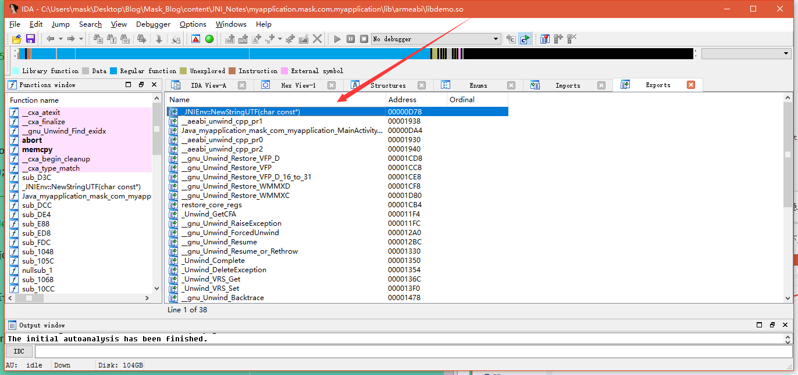
; =============== S U B R O U T I N E =======================================
.text:00000D78
.text:00000D78 ; Attributes: bp-based frame fpd=8
.text:00000D78
.text:00000D78 ; _DWORD __fastcall _JNIEnv::NewStringUTF(_JNIEnv *__hidden this, const char *)
.text:00000D78 WEAK _ZN7_JNIEnv12NewStringUTFEPKc
.text:00000D78 _ZN7_JNIEnv12NewStringUTFEPKc ; CODE XREF: Java_myapplication_mask_com_myapplication_MainActivity_FromNative+14p
.text:00000D78
.text:00000D78 var_8 = -8
.text:00000D78 var_4 = -4
.text:00000D78
.text:00000D78 PUSH{R7,LR}
.text:00000D7A SUB SP, SP, #8
.text:00000D7C ADD R7, SP, #0
.text:00000D7E STR R0, [R7,#8+var_4]
.text:00000D80 STR R1, [R7,#8+var_8]
.text:00000D82 LDR R3, [R7,#8+var_4]
.text:00000D84 LDR R2, [R3]
.text:00000D86 MOVSR3, #0x29C
.text:00000D8A LDR R3, [R2,R3]
.text:00000D8C LDR R1, [R7,#8+var_4]
.text:00000D8E LDR R2, [R7,#8+var_8]
.text:00000D90 MOVSR0, R1
.text:00000D92 MOVSR1, R2
.text:00000D94 BLX R3
.text:00000D96 MOVSR3, R0
.text:00000D98 NOP
.text:00000D9A MOVSR0, R3
.text:00000D9C MOV SP, R7
.text:00000D9E ADD SP, SP, #8
.text:00000DA0 POP {R7,PC}
.text:00000DA0 ; End of function _JNIEnv::NewStringUTF(char const*)
一句一句分析：
导入函数
EXPORT Java_myapplication_mask_com_myapplication_MainActivity_FromNative
.text:00000DA4 Java_myapplication_mask_com_myapplication_MainActivity_FromNative
将R7和LR寄存器的值压入栈（什么？啥是寄存器？啥是内存栈？呐，这个都不知道的话，下面你忽略吧0.0），LR寄存器是用来保存下一条指令的
PUSH{R7,LR}
SP = SP -8
SP寄存器是用来保存栈顶元素的，而内存栈是自下到上，降序的，此处SP减去8，就是为了开辟出一段栈空间
SUB SP, SP, #8
R7 = SP + 0
此处相当于R7 = SP，将SP的值传给R7，为什么这样做呢？这其实是一种保护机制，因为SP是时刻指向栈顶的，可以看到，下面的一些操作都是以SP为基地址进行的，那么我们这里用R7来替代SP，，将SP的值保存在R7中，我们后边调用函数出栈时，在将R7的值还给SP，这样可以保证栈平衡
ADD R7, SP, #0
将R0寄存器的值赋给(R7+8-4)地址处，这是一个写操作
STR R0, [R7,#8+var_4]
将R1寄存器的值赋给(R7+8-8)地址处，这是一个写操作
STR R1, [R7,#8+var_8]
那么RO,R1寄存器的值是什么呢？在ARM中，前4个参数是用R0-R3来保存的（如果多余4个参数，剩下的则是用栈来操作）
那么JNI函数的第一个参数是一个JNIEnv 类型的指针*env，第二个参数是一个jclass类型的参数clazz或者是一个jobject类型的object，呐，这个函数其实只有一个参数，那就是JNIEnv类型的指针*env,为啥没有第二个，因为压根就啥也没操作，这里就只是return了一个字符串而已。。。
将第一个参数保存到R3寄存器
LDR R3, [R7,#8+var_4]
将aHelloFromJni - 0xDB6的值赋给R2，这里有个小tip，你可以鼠标右键点击那个“=”,他会自动帮你转会为最终地址
LDR R2, =(aHelloFromJni - 0xDB6)
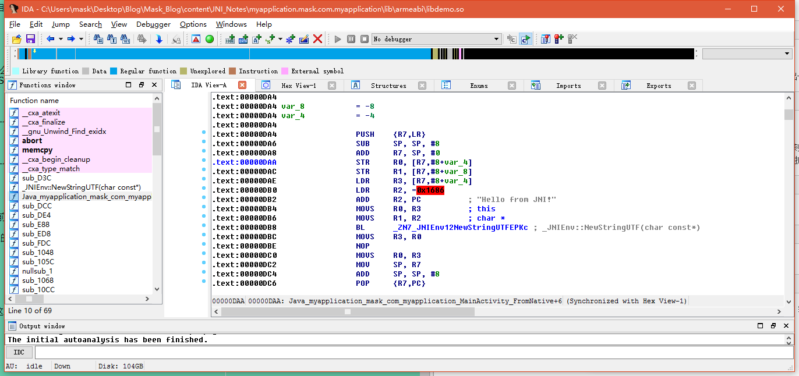
R2 = R2 + PC
PC寄存器为当前指令，但是这里需要注意，之前我也搞错过，ARM在执行命令时，其实是分三步走的
1.取址
2.编译
3.执行
那么当我执行第一条命令时，第二条指令在编译，第三条指令在取址，过程大概如下：
取址------------------编译-----------------------执行
取址-----------------------编译-----------------执行
取址-----------------编译-----------------执行
那么就好理解了，此时PC的值0x00000DB6
那么R2此时的值为(aHelloFromJni - 0xDB6+0xDB6)处的值,那么就是Hello from JNI!后面的注释也有给出
ADD R2, PC
将R3的值赋给R0，并且会影响标志位
MOVS R0, R3
将R2的值赋给R1，并且会影响标志位
MOVS R1, R2
上面两步其实是为子函数做准备，将*env和Hello from JNI!进行传参，和之前说的一样，是用R0,R1保存前两个参数
BL进行函数跳转，根据注释可以知道，调用的是_JNIEnv::NewStringUTF(char const*)函数，有兴趣可以跟过去分析，过程都差不多
BL _ZN7_JNIEnv12NewStringUTFEPKc ; _JNIEnv::NewStringUTF(char const*)
NOP为空操作，就是啥也不干
MOVS R3, R0
NOP
MOVS R0, R3
这里将R7的值赋给SP，和我们之前说的一样
MOV SP, R7
这里SP = SP+8，回收调之前开辟的空间
ADD SP, SP, #8
出栈，此时LR的值保存到PC中，说明结束上述操作，开始下一条指令
POP {R7,PC}
函数结束
; End of function Java_myapplication_mask_com_myapplication_MainActivity_FromNative
汇编分析完了，我们再来看看伪代码，可以更好的理解刚刚的操作，F5大法好哇
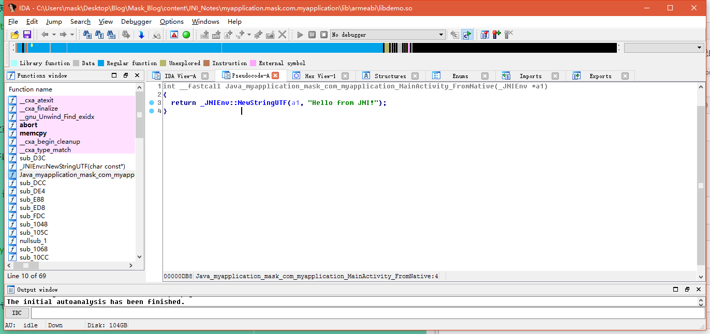
哗擦，居然识别出来了。。。。。。。还想演示一遍修复参数呢！！！！
待我翻下刚刚C版本写的那个
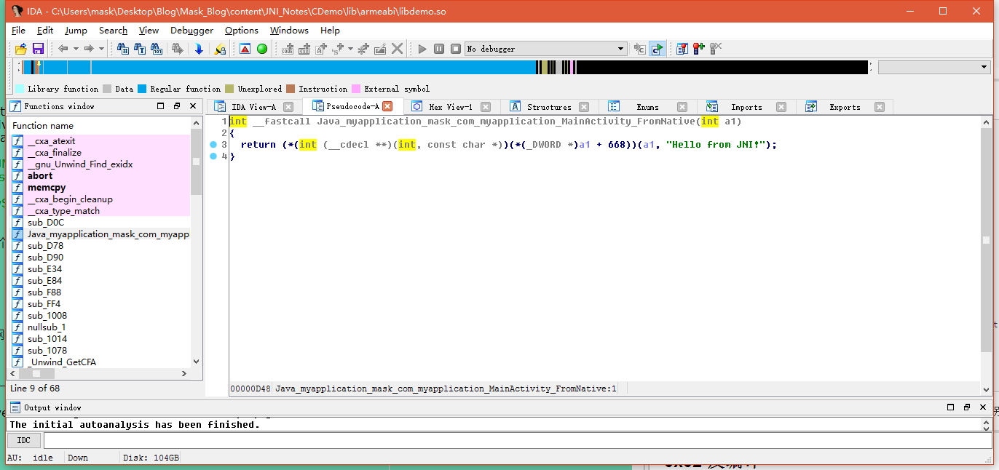
呐，稳，没识别出来23333
开始修复
之前说过，JNI函数的第一个参数一般默认是JNIEnv的结构体指针，那么这里我们要让IDA能够识别JNI结构体，我们需要导入一个JNI.h头文件（我的IDA好像自带），这个文件是啥，待会再说，这个IDA.h你可以去网上下载，其实NDK就自带这个
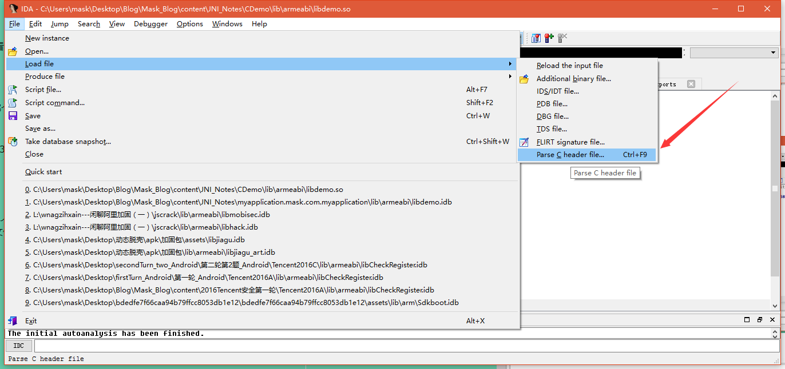
导入该文件，成功会有提示，提示啥我忘了，反正会告诉你导入成功了
然后
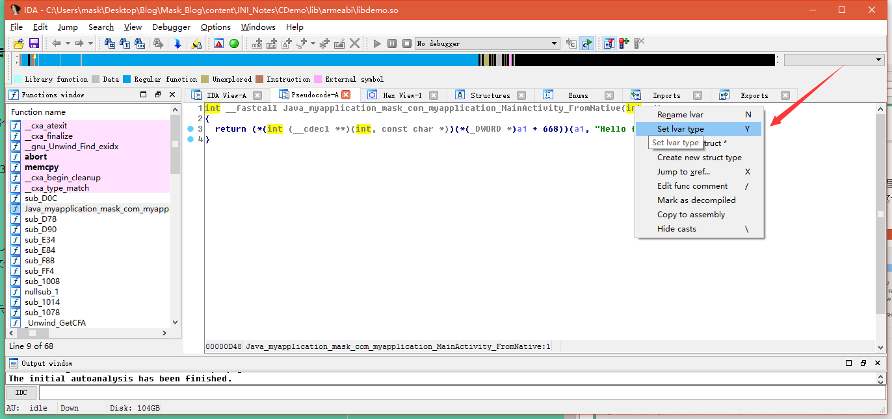
修复参数类型，输入JNIEnv*
我这里函数都给我识别出来了。。。，其实应该还有一步，如果你的函数没有正确识别的话，右键你的函数名，会显示Force call type，点击这个就能正确识别了
这里还有几个疑问没解决
1.JNIEnv* env这个指针到底指向哪？
2.JNI.h是干啥的？
3.第二个参数类型何时是jclass何时是jobject
先来看看这个JNI.h是啥
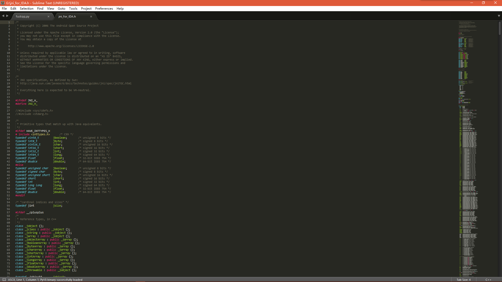
这里其实是一些数据类型转换，比如JAVA中的
#ifdef HAVE_INTTYPES_H
# include <inttypes.h> /* C99 */
typedef uint8_t jboolean; /* unsigned 8 bits */
typedef int8_t jbyte; /* signed 8 bits */
typedef uint16_tjchar; /* unsigned 16 bits */
typedef int16_t jshort; /* signed 16 bits */
typedef int32_t jint; /* signed 32 bits */
typedef int64_t jlong; /* signed 64 bits */
typedef float jfloat; /* 32-bit IEEE 754 */
typedef double jdouble;/* 64-bit IEEE 754 */
#else
typedef unsigned char jboolean; /* unsigned 8 bits */
typedef signed char jbyte; /* signed 8 bits */
typedef unsigned short jchar; /* unsigned 16 bits */
typedef short jshort; /* signed 16 bits */
typedef int jint; /* signed 32 bits */
typedef long long jlong; /* signed 64 bits */
typedef float jfloat; /* 32-bit IEEE 754 */
typedef double jdouble;/* 64-bit IEEE 754 */
这里是C和C++中的一些差别
#ifdef __cplusplus
/*
* Reference types, in C++
*/
class _jobject {};
class _jclass : public _jobject {};
class _jstring : public _jobject {};
class _jarray : public _jobject {};
class _jobjectArray : public _jarray {};
class _jbooleanArray : public _jarray {};
class _jbyteArray : public _jarray {};
class _jcharArray : public _jarray {};
class _jshortArray : public _jarray {};
class _jintArray : public _jarray {};
class _jlongArray : public _jarray {};
class _jfloatArray : public _jarray {};
class _jdoubleArray : public _jarray {};
class _jthrowable : public _jobject {};
typedef _jobject* jobject;
typedef _jclass*jclass;
typedef _jstring* jstring;
typedef _jarray*jarray;
typedef _jobjectArray* jobjectArray;
typedef _jbooleanArray* jbooleanArray;
typedef _jbyteArray*jbyteArray;
typedef _jcharArray*jcharArray;
typedef _jshortArray* jshortArray;
typedef _jintArray* jintArray;
typedef _jlongArray*jlongArray;
typedef _jfloatArray* jfloatArray;
typedef _jdoubleArray* jdoubleArray;
typedef _jthrowable*jthrowable;
typedef _jobject* jweak;
#else /* not __cplusplus */
/*
* Reference types, in C.
*/
typedef void* jobject;
typedef jobject jclass;
typedef jobject jstring;
typedef jobject jarray;
typedef jarray jobjectArray;
typedef jarray jbooleanArray;
typedef jarray jbyteArray;
typedef jarray jcharArray;
typedef jarray jshortArray;
typedef jarray jintArray;
typedef jarray jlongArray;
typedef jarray jfloatArray;
typedef jarray jdoubleArray;
typedef jobject jthrowable;
typedef jobject jweak;
简单看看就好，下面来看看关键
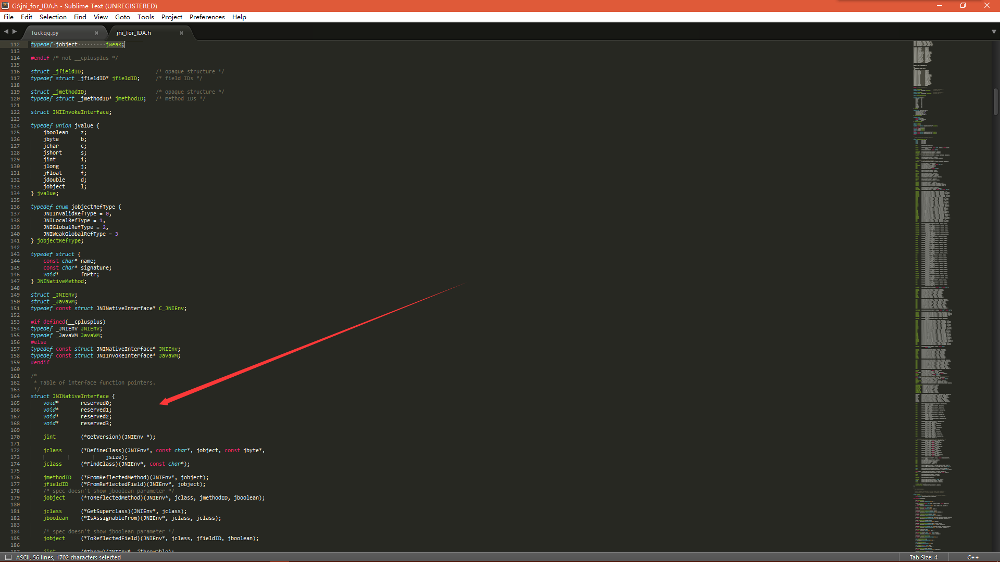
这个就是*env所指向的结构体了，下面是它所包含的一系列函数，我们来找找之前的NewStringUTF函数
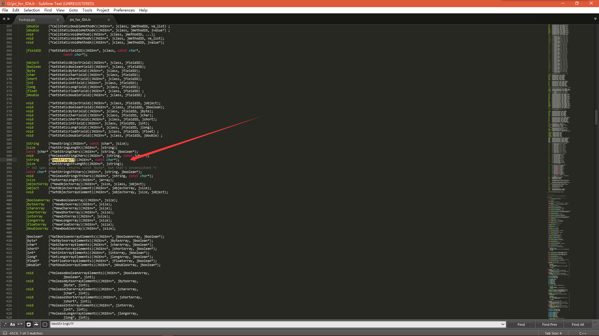
呐，参数和我们刚刚在汇编分析时描述的一样。那么刚刚的第一个第二个问题算是解决了。但是细心的朋友肯定注意到了一个细节
这个和JNIEnv在一块的另一个结构体是他娘的啥？凭这打破砂锅问到底的精神，我说
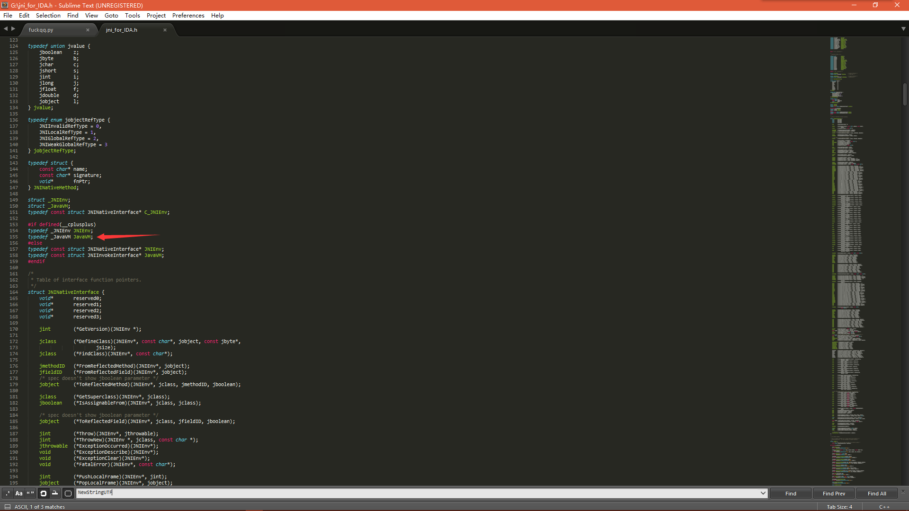
这个JavaVM其实是虚拟机在JNI层的一个代表，一个进程中只有一个JavaVM,他是进程级的，那么相对的，JINEnv其实是线程级的。那么他们必然是有关系的，有啥关系？你等着
看到这个JavaVm结构体了么？这里有个函数
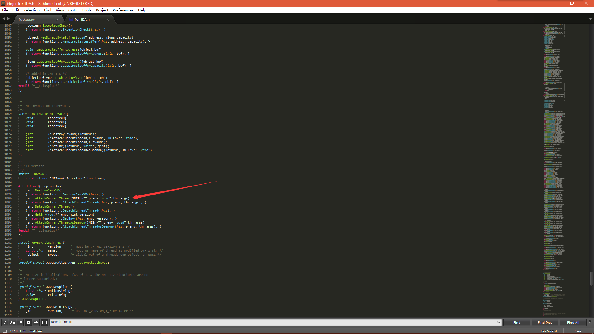
通过调用这个函数我们就可以获得这个线程的JNIEnv结构体，干嘛要获得？等你要的时候你就晓得了
jint AttachCurrentThread(JNIEnv** p_env, void* thr_args)
那么再来看看第三个问题，什么时候是jclass，什么时候是object？
这个其实很好理解，在Java层，如果你声明的是一个static函数，那么他就是jclass，如果不是static函数，那就是jobject，很好理解的
在JNI注册函数有两种注册方法，一种是静态注册，就是刚才演示的那种，在Java层声明，在JNI定义，下面来讲第二种，动态注册
将动态注册前，先看看Java层是怎样找到JNI层中对应的函数的，之前说过JNI库中默认使用Java_myapplication_mask_com_myapplication_MainActivity_FromNative这种格式，那么可以理解为JNI会为库和java层建立某种联系，注册函数其实就是建立这种联系，然后进行查找，作用类似指针，其实你就可以理解为指针，那么JNI中是如何建立这种关系的呢？
JNI.h中有这样一个结构体
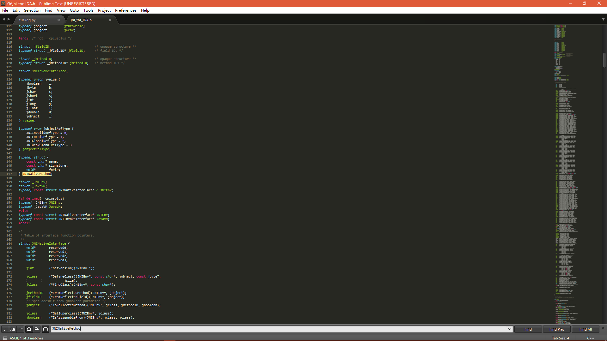
typedef struct {
const char* name; //函数名
const char* signature;//签名信息
void* fnPtr;//这个就是函数对应的指针和上面说的吻合，果然是个指针
} JNINativeMethod;
呐，找到这个关系了，怎么去注册呢？这就要分析源码了，源码位置在\frameworks\base\core\jni\AndroidRunTime.cpp,感兴趣可以看看
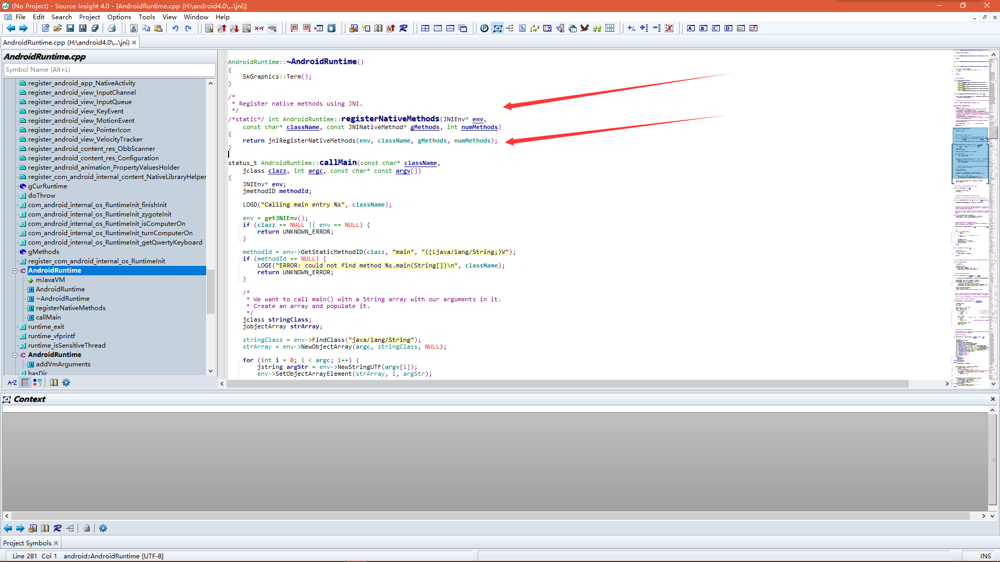
/*
* Register native methods using JNI.
*/
/*static*/ int AndroidRuntime::registerNativeMethods(JNIEnv* env,
const char* className, const JNINativeMethod* gMethods, int numMethods)
{
return jniRegisterNativeMethods(env, className, gMethods, numMethods);
}
可以看到这里回调了一个函数，行，我说
诺，在这呢\dalvik\libnativehelper\JNIHelp.c
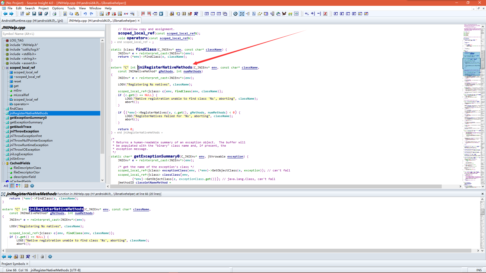
static jclass findClass(C_JNIEnv* env, const char* className) {
JNIEnv* e = reinterpret_cast<JNIEnv*>(env);
return (*env)->FindClass(e, className);
}
extern "C" int jniRegisterNativeMethods(C_JNIEnv* env, const char* className,
const JNINativeMethod* gMethods, int numMethods)
{
JNIEnv* e = reinterpret_cast<JNIEnv*>(env);
LOGV("Registering %s natives", className);
scoped_local_ref<jclass> c(env, findClass(env, className));
if (c.get() == NULL) {
LOGE("Native registration unable to find class '%s', aborting", className);
abort();
}
if ((*env)->RegisterNatives(e, c.get(), gMethods, numMethods) < 0) {
LOGE("RegisterNatives failed for '%s', aborting", className);
abort();
}
return 0;
}
绕了半天。。。又回到JNI去了23333
那么我们动态注册的时候，只需要完成下面操作即可
jclass clazz = (*env) -> FindClass(env,className);
(*env) ->RegisterNatives（env,clazz,gmethods,numMethods);
那么注册在哪操作呢？？？呐，需要在一个JNI_Onload()函数中，这个函数的第一个参数就是JavaVM* vm （动态注册必须实现这个函数，静态注册则不需要，但是这个函数通常可以用来初始化一些操作）
这些只是新手自己的一些学习笔记，捋了捋思绪后稍微平静了些，那么也不早了